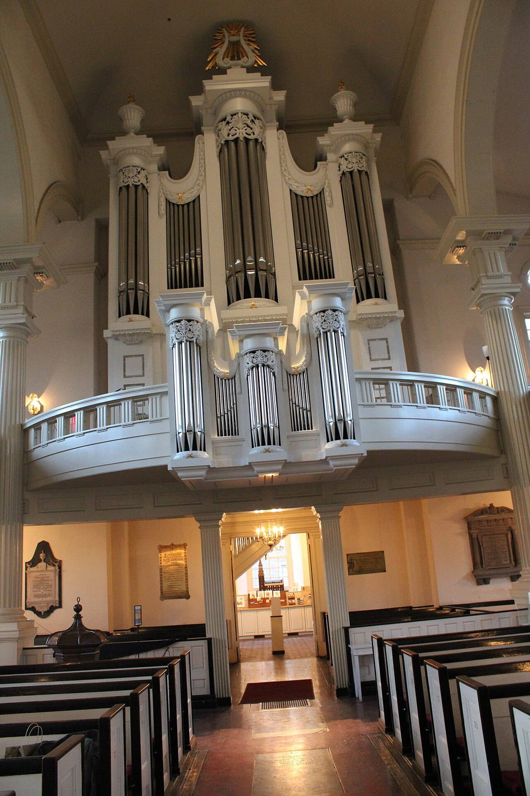
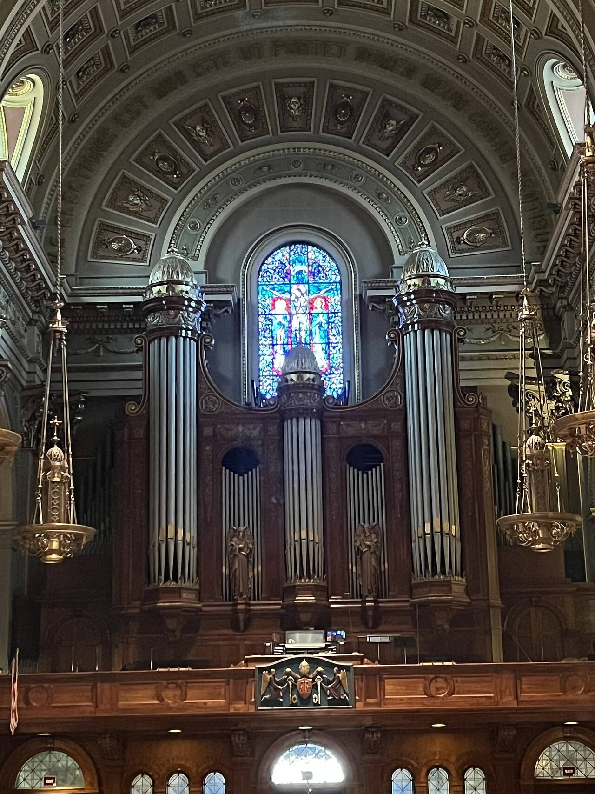

Исторические и справочные гербы


Philadelphia
Путеводитель. Объектов в этом выпуске: 36.
OTIUM — практика нарочитого досуга. В античном смысле otium — не побег от работы, а время, когда внимание возвращается к памяти, пейзажу и мысли — без прикладного дедлайна.
Мы выстраиваем маршруты для неспешного присутствия, а не для чек-листа достопримечательностей: важно быть в месте, а не «потреблять» виды.
OTIUM — не туроператор. Это приглашение пройтись, остановиться и оставить маршрут незавершённым, если свет на фасаде заслуживает ещё минуты.
Исторические и справочные гербы
Путеводитель. Объектов в этом выпуске: 36.
Филадельфия — крупнейший город Пенсильвании, место подписания Декларации независимости США.
Квакерские корни, планировка Уильяма Пенна, индустриальная эпоха и современный медицинский кластер. Исторический район, музеи и стадионы отражают роль «колыбели американской свободы».
Конституция 1787 года и промышленная революция сделали город «мастерской» США; упадок центра в XX веке сменился ревитализацией. Филадельфия сочетает медицинские кластеры, исторические кварталы и спорт, оставаясь ключом к ранней американской истории.
Benjamin Franklin Parkway

Barnes Foundation — landmark in Philadelphia.
Moved from Lower Merion after legal disputes; Parkway building replicates room layouts and hangings.
One of the densest concentrations of Renoir, Cézanne, and Matisse in the world.
Schuylkill River

Bartram's Garden — landmark in Philadelphia.
Bartram supplied plants to European collectors in the 18th century.
Quiet riverfront contrast to Center City historic core.
Arch Street

Betsy Ross House — landmark in Philadelphia.
Small colonial-era home interpreted around upholsterer Betsy Ross and Revolutionary-era craft.
Popular Old City stop on the freedom trail circuit.
Schuylkill River

Boathouse Row — landmark in Philadelphia.
Developed as clubs built individual boathouses along the riverbank; preserved as a historic district.
Heart of Philadelphia rowing culture and Fairmount views.
2nd Street, Old City

Christ Church — landmark in Philadelphia.
Congregation dates to 1695; current building by Robert Smith.
Active parish church and Revolutionary-era heritage site.
Christ Church organ.jpg

Christ Church organ.jpg — landmark in Philadelphia.

Christ Church Philadelphia — landmark in Philadelphia.
Clinton St Historic District Philly.JPG

Clinton St Historic District Philly.JPG — landmark in Philadelphia.
Center City

Comcast Center — landmark in Philadelphia.
Anchors Comcast's headquarters campus; second tower added later nearby.
Symbol of 21st-century Center City business district.
Fairmount Avenue

Eastern State Penitentiary — landmark in Philadelphia.
Influenced prison architecture worldwide; housed Al Capone briefly in a comparatively plush cell.
National Historic Landmark framing debates on incarceration.
Old City

Elfreth's Alley — landmark in Philadelphia.
Homes for tradespeople and artisans from the early 18th century onward; preserved as a museum street.
Rare intact slice of pre-industrial Philadelphia street life.
Schuylkill banks

Fairmount Water Works — landmark in Philadelphia.
Engineered water supply for a growing city; later superseded but preserved.
Framed views toward the Philadelphia Museum of Art upstream.
Delaware River

Fort Mifflin — landmark in Philadelphia.
Built on Mud Island to guard Philadelphia's river approach.
Rare intact Revolutionary-era fortification in the city.
Chestnut Street

Independence Hall — landmark in Philadelphia.
Built as the Pennsylvania State House; served as capitol for Pennsylvania and meeting place of the Second Continental Congress.
Birthplace documents of the United States are associated with this chamber.
South 9th Street

Italian Market — landmark in Philadelphia.
Grew with South Philadelphia immigration; featured in film and food tourism.
Working neighborhood market, not only a tourist strip.
Independence National Historical Park

Liberty Bell — landmark in Philadelphia.
Hung in the Pennsylvania State House (Independence Hall) tower; adopted as a symbol of liberty and later of abolition.
One of the most visited objects of the American Revolution story in Philadelphia.
John F. Kennedy Plaza

LOVE Park — park in Philadelphia, United States of America.
JFK Plaza opened in 1965; LOVE installed for the Bicentennial and later recast on site.
Default meeting point and symbol of Philadelphia pride.
Old City

Museum of the American Revolution — landmark in Philadelphia.
Opened to tell inclusive narratives of the Revolutionary era near Independence Hall.
Complements older sites with narrative exhibits and programming.
College of Physicians

The Mütter Museum is a medical history and science museum located in the Center City Philadelphia. It contains a collection of anatomical and pathological specimens, wax models, and antique medical equipment. The museum is part of The College of Physicians of Philadelphia.
Grew from the College of Physicians of Philadelphia collections.
Internationally known cabinet-of-curiosities medical museum.
Independence Mall

National Constitution Center — landmark in Philadelphia.
Created as a non-partisan civic education institution.
Anchors the mall between Independence Hall and the Liberty Bell.
Palace Theatre Newark.jpg

Palace Theatre Newark.jpg — landmark in Philadelphia.
Broad Street

Pennsylvania Academy of the Fine Arts — museum and art school in Philadelphia, Pennsylvania.
Founded 1805; building anchors North Broad's cultural institutions.
Training ground for American artists including Thomas Eakins.
Philadelphia cathedral organ.jpg

Philadelphia cathedral organ.jpg — landmark in Philadelphia.
Center City

Philadelphia City Hall — landmark in Philadelphia.
Designed by John McArthur Jr.; decades-long construction centered Philadelphia's civic life at Penn Square.
Defines Center City skyline and anchors the Broad Street cultural corridor.
South Street

Philadelphia Magic Gardens — landmark in Philadelphia.
Isaiah Zagar began South Street mosaics in the 1990s; saved from development by community campaign.
Signature folk-art attraction of the South Street corridor.
Benjamin Franklin Parkway

Художественный музей Филадельфии (англ. Philadelphia Museum of Art, сокр. PMA) — один из крупнейших в США музеев изобразительного искусства, содержит около 240 000 экспонатов.
Built on Fairmount hill as part of the Benjamin Franklin Parkway plan; expanded with modern wings later.
Flagship fine-art museum of the city and a Parkway landmark.
Girard Avenue

Philadelphia Zoo — zoo in Philadelphia, Pennsylvania, United States.
Founded on conservation and education ideals of the 19th century.
Major family destination at the park's western edge.
PhiladelphiaMuseumOfArt2017.jpg

PhiladelphiaMuseumOfArt2017.jpg — landmark in Philadelphia.
Qadiriya-small.JPG

Qadiriya-small.JPG — landmark in Philadelphia.
12th Street

Reading Terminal Market — farmer's market in Philadelphia.
Opened in 1893 as a public market within the Reading Terminal train shed.
Working public market and daily lunch destination for residents and visitors.
Center City

Rittenhouse Square — landmark in Philadelphia.
Named for astronomer David Rittenhouse; gentrified into a genteel park in the 19th century.
Center of Rittenhouse neighborhood dining and strolling.
Benjamin Franklin Parkway

Rodin Museum — landmark in Philadelphia.
Jules E. Mastbaum commissioned casts and assembled the collection for the city.
Quiet sculpture garden opposite the Parkway's larger museums.
Fairmount Park

Japanese House and Garden — traditional garden in Fairmount Park, Philadelphia.
Displayed in New York before reassembly in Philadelphia's park.
Peaceful cultural contrast within Fairmount Park.
Science museum

The Franklin Institute — landmark in Philadelphia.
Founded 1824; moved to the Parkway in the 1930s and expanded repeatedly.
Primary science museum of the region.
Amtrak hub

William H. Gray III 30th Street Station — landmark in Philadelphia.
Built by the Pennsylvania Railroad to replace Broad Street facilities; Art Deco details inside.
Gateway for rail travel and a civic interior landmark.
Fairmount

Wissahickon Valley Park — landmark in Philadelphia.
Preserved as parkland as the city grew around Fairmount's waterworks system.
Premier urban wilderness hike minutes from downtown.